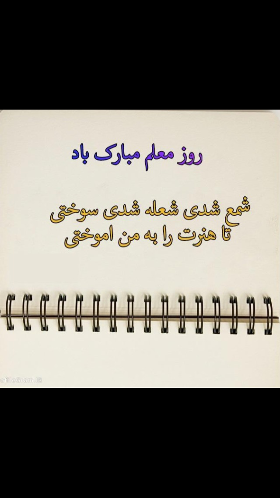

Happy Teacher's Day

Small Gifts from your Students
Madina:
You deserve recognition for all the sacrifices that you make, you are more than a teacher to me and I THANK YOU! Today I celebrate you for being selfless, devoted, hardworking, and the wisest person in the classroom. I am grateful to be your student. Happy Teacher’s Day! Admiration, devotion, education, inspiration and compassion are what you have. So I give you a toast to you, my teacher, because you deserve to be celebrated. Having a teacher like you is a blessing from above. Thank you for changing my world. Thank you for being my child’s second parent and a fantastic mentor. Happy Teachers Day! Wishing you joy and happiness, you are an amazing teacher, and you only deserve the best.You are the spark, the inspiration, the guide, the candle to my life. I am deeply thankful that you are my teacher.Even though my grades may not always be the best, I assure you that having you as my teacher makes me truly blessed. For now I know that you’ll never give up on me, Thank you for helping me be all I can be. Because of you I can see that my future is bright, Above all you taught me to shine forth my light. Happy Teachers Day my teacher! On this day we honor teachers like you, Who give of themselves in all that they do. So thank you my teacher for all that you gave, And I promise to try my best to behave! Warm wishes to the teacher who is a great example and who taught me so much. Thank you for giving your love and your 110%. Because of you a bright future is within my grasp. Thank you for inspiring me.
A small gift form me to dear Zahra kumail Hashimi. I hope you like it.
Marwa:
Teacher Zahra Kumail Hashimi! Those Days in quarantine was the best days for me, I wish I would go to the past and once again you would be our Teacher. I am really grateful that I had such a teacher like you, an intelligent, a kind and a patient teacher. Thank you from everything You did for us. Happy Teacher's Day!
A small gift form me to dear Zahra kumail Hashimi.Najmia:
Happy Teacher's Day
Romila:
Happy Teacher's Day
A small gift from me to dear Zahra janZahra Alavy:
Happy Teacher's Day to the best teacher and instructor
Zainab:
Happy Teacher's to our beautiful teacher.
Ayesha:
Happy Teacher's Day
Homaira:
I wish you a happy Teacher's Day
Zahra Ghafori:
Happy Teacher's Day
Zahida:
Happy Teacher's Day
Najiba:
Happy Teacher's Day to Dear Zahra jan
Faryal:
We will always be thankful to you; For all the hard work and efforts That you put in , to educate us Happy Teacher’s day
Roya:
Happy Teacher's Day
Zahra Kumail Hashimi
Here she is; Zahra Hashimi from Afghanistan. she has graduated from Qale Bakhtiar high school in the year 1392. And she started university in software engineering in 1393. She has finished university by presenting her project with the title of (Cure Hospital Network) in 1396. She has worked as intern in Etisalat Afghanistan (EA) for 3 months. Then, she has worked as revenue mobilizer in Habitat university. As her passion in STEM and motivating young generation in these fields, she has been started working for women development in Womanity Foundation (WF) since April of 2020 as a trainer. During her working as a trainer, 15 students have entered technology and computer world by her. She trained them as a real instructor who are burning for her students to become someone for themselves. She taught them the way of living to a modern world everything by technology. She became a sample of passion and hard worker for her students. Her students appreciate her for being the persons they are today. Everyone are creating their own world by skills of computer that she has been taught them. It is we, a group of young girls who are grateful to lady Zahra Kumail Hashimi. We are all full of skills like: building certificate, workers with MS Office, creating payrolls and our own websites. It is we that are hosting this web page as gift to the best instructor. We are building this web page as a hard working sample of dear Zahra.